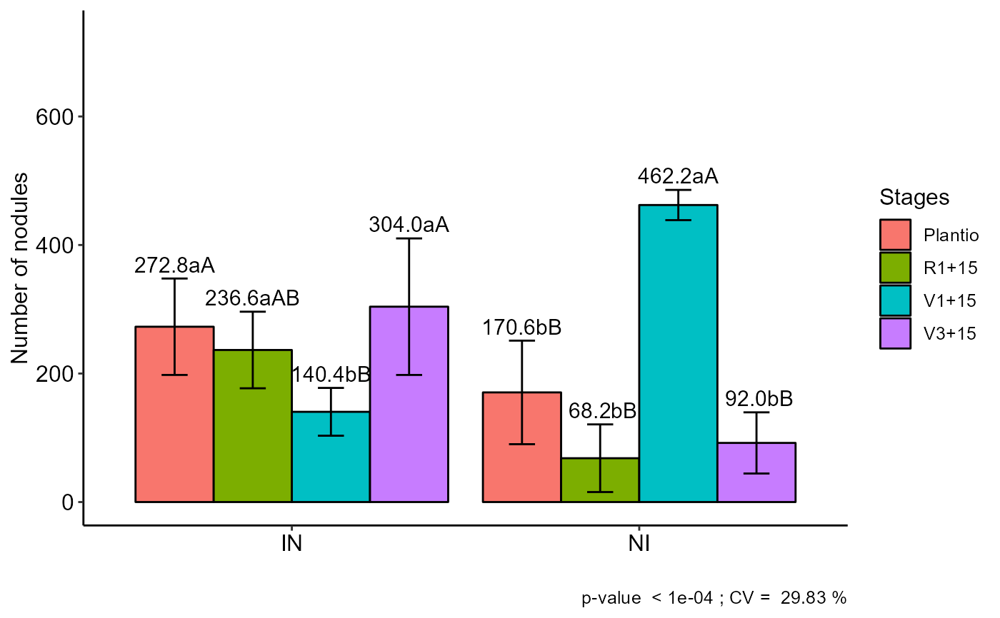

FAT2DIC.RdAnalysis of an experiment conducted in a completely randomized design in a double factorial scheme using analysis of variance of fixed effects.
FAT2DIC( f1, f2, response, norm = "sw", homog = "bt", mcomp = "tukey", alpha.f = 0.05, alpha.t = 0.05, quali = c(TRUE, TRUE), grau = NA, transf = 1, geom = "bar", theme = theme_classic(), ylab = "Response", xlab = "", legend = "Legend", color = "rainbow", fill = "lightblue", textsize = 12, addmean = TRUE, errorbar = TRUE, CV = TRUE, dec = 3, angle = 0, posi = "right", family = "sans", point = "mean_sd", sup = NA, ylim = NA, angle.label = 0 )
| f1 | Numeric or complex vector with factor 1 levels |
|---|---|
| f2 | Numeric or complex vector with factor 2 levels |
| response | Numerical vector containing the response of the experiment. |
| norm | Error normality test (default is Shapiro-Wilk) |
| homog | Homogeneity test of variances (default is Bartlett) |
| mcomp | Multiple comparison test (Tukey (default), LSD, Scott-Knott and Duncan) |
| alpha.f | Level of significance of the F test (default is 0.05) |
| alpha.t | Significance level of the multiple comparison test (default is 0.05) |
| quali | Defines whether the factor is quantitative or qualitative (qualitative) |
| grau | Degree of polynomial in case of quantitative factor (default is 1) |
| transf | Applies data transformation (default is 1; for log consider 0) |
| geom | Graph type (columns or segments (For simple effect only)) |
| theme | ggplot2 theme (default is theme_classic()) |
| ylab | Variable response name (Accepts the expression() function) |
| xlab | Treatments name (Accepts the expression() function) |
| legend | Legend title name |
| color | Column chart color (default is "rainbow") |
| fill | Defines chart color (to generate different colors for different treatments, define fill = "trat") |
| textsize | Font size |
| addmean | Plot the average value on the graph (default is TRUE) |
| errorbar | Plot the standard deviation bar on the graph (In the case of a segment and column graph) - default is TRUE |
| CV | Plotting the coefficient of variation and p-value of Anova (default is TRUE) |
| dec | Number of cells |
| angle | x-axis scale text rotation |
| posi | Legend position |
| family | Font family |
| point | if quali=F, defines whether to plot all points ("all"), mean ("mean"), standard deviation ("mean_sd") or mean with standard error (default - "mean_se"). |
| sup | Number of units above the standard deviation or average bar on the graph |
| ylim | y-axis scale |
| angle.label | Label angle |
The table of analysis of variance, the test of normality of errors (Shapiro-Wilk, Lilliefors, Anderson-Darling, Cramer-von Mises, Pearson and Shapiro-Francia), the test of homogeneity of variances (Bartlett or Levene), the test of independence of Durbin-Watson errors, the test of multiple comparisons (Tukey, LSD, Scott-Knott or Duncan) or adjustment of regression models up to grade 3 polynomial, in the case of quantitative treatments. The column chart for qualitative treatments is also returned.
The ordering of the graph is according to the sequence in which the factor levels are arranged in the data sheet. The bars of the column and segment graphs are standard deviation.
The function does not perform multiple regression in the case of two quantitative factors.
In the final output when transformation (transf argument) is different from 1, the columns resp and respo in the mean test are returned, indicating transformed and non-transformed mean, respectively.
Principles and procedures of statistics a biometrical approach Steel & Torry & Dickey. Third Edition 1997
Multiple comparisons theory and methods. Departament of statistics the Ohio State University. USA, 1996. Jason C. Hsu. Chapman Hall/CRC.
Practical Nonparametrics Statistics. W.J. Conover, 1999
Ramalho M.A.P., Ferreira D.F., Oliveira A.C. 2000. Experimentacao em Genetica e Melhoramento de Plantas. Editora UFLA.
Scott R.J., Knott M. 1974. A cluster analysis method for grouping mans in the analysis of variance. Biometrics, 30, 507-512.
Mendiburu, F., & de Mendiburu, M. F. (2019). Package ‘agricolae’. R Package, Version, 1-2.
Gabriel Danilo Shimizu, shimizu@uel.br
Leandro Simoes Azeredo Goncalves
Rodrigo Yudi Palhaci Marubayashi
#==================================== # Example cloro #==================================== library(AgroR) data(cloro) attach(cloro)#> #> #>#> #> #>#> #> #>#> #> #>#> #> #>#> #> #>#> #> #>#> #> #>#> #> #>#> #> #>#> #> #>#> #> #>#> #> #>#> #> #>#> #> #>#> #> #>#> #> #>#> #> #>#> #> #>FAT2DIC(f1, f2, resp, ylab="Number of nodules", legend = "Stages")#> #> ----------------------------------------------------------------- #> Normality of errors #> ----------------------------------------------------------------- #> Method Statistic p.value #> Shapiro-Wilk normality test(W) 0.9680878 0.3125183 #>#> As the calculated p-value is greater than the 5% significance level, hypothesis H0 is not rejected. Therefore, errors can be considered normal#> #> ----------------------------------------------------------------- #> Homogeneity of Variances #> ----------------------------------------------------------------- #> Method Statistic p.value #> Bartlett test(Bartlett's K-squared) 9.875441 0.1957427 #>#> As the calculated p-value is greater than the 5% significance level, hypothesis H0 is not rejected. Therefore, the variances can be considered homogeneous#> #> ----------------------------------------------------------------- #> Independence from errors #> ----------------------------------------------------------------- #> Method Statistic p.value #> Durbin-Watson test(DW) 2.092504 0.1892105 #>#> As the calculated p-value is greater than the 5% significance level, hypothesis H0 is not rejected. Therefore, errors can be considered independent#> #> ----------------------------------------------------------------- #> Additional Information #> ----------------------------------------------------------------- #> #> CV (%) = 29.83 #> Mean = 218.35 #> Median = 185 #> Possible outliers = No discrepant point #> #> ----------------------------------------------------------------- #> Analysis of Variance #> ----------------------------------------------------------------- #> Df Sum Sq Mean.Sq F value Pr(F) #> Fator1 1 16160.4 16160.4 3.810516 5.972867e-02 #> Fator2 3 116554.5 38851.5 9.160929 1.596453e-04 #> Fator1:Fator2 3 452096.2 150698.7 35.533773 2.663131e-10 #> Residuals 32 135712.0 4241.0 #>#>#> ----------------------------------------------------------------- #> Significant interaction: analyzing the interaction #> ----------------------------------------------------------------- #> #> ----------------------------------------------------------------- #> Analyzing F1 inside of each level of F2 #> ----------------------------------------------------------------- #> #> Df Sum Sq Mean Sq F value Pr(>F) #> Fator2 3 116555 38852 9.1609 0.0001596 *** #> Fator2:Fator1 4 468257 117064 27.6030 5.661e-10 *** #> Fator2:Fator1: Plantio 1 26112 26112 6.1571 0.0185315 * #> Fator2:Fator1: V1+15 1 258888 258888 61.0441 6.522e-09 *** #> Fator2:Fator1: V3+15 1 112360 112360 26.4938 1.295e-05 *** #> Fator2:Fator1: R1+15 1 70896 70896 16.7169 0.0002728 *** #> Residuals 32 135712 4241 #> --- #> Signif. codes: 0 '***' 0.001 '**' 0.01 '*' 0.05 '.' 0.1 ' ' 1 #> #> ----------------------------------------------------------------- #> Analyzing F2 inside of the level of F1 #> ----------------------------------------------------------------- #> #> Df Sum Sq Mean Sq F value Pr(>F) #> Fator1 1 16160 16160 3.8105 0.059729 . #> Fator1:Fator2 6 568651 94775 22.3474 3.699e-10 *** #> Fator1:Fator2: IN 3 75470 25157 5.9318 0.002454 ** #> Fator1:Fator2: NI 3 493181 164394 38.7629 9.117e-11 *** #> Residuals 32 135712 4241 #> --- #> Signif. codes: 0 '***' 0.001 '**' 0.01 '*' 0.05 '.' 0.1 ' ' 1#> #> ----------------------------------------------------------------- #> Final table #> ----------------------------------------------------------------- #> Plantio V1+15 V3+15 R1+15 #> IN 272.8 aA 140.4 bB 304.0 aA 236.6 aAB #> NI 170.6 bB 462.2 aA 92.0 bB 68.2 bB#> #> #> #>#==================================== # Example corn #==================================== library(AgroR) data(corn) attach(corn)#> #> #>#> #> ----------------------------------------------------------------- #> Normality of errors #> ----------------------------------------------------------------- #> Method Statistic p.value #> Shapiro-Wilk normality test(W) 0.9704679 0.6785543 #>#> As the calculated p-value is greater than the 5% significance level, hypothesis H0 is not rejected. Therefore, errors can be considered normal#> #> ----------------------------------------------------------------- #> Homogeneity of Variances #> ----------------------------------------------------------------- #> Method Statistic p.value #> Bartlett test(Bartlett's K-squared) 3.948702 0.5568251 #>#> As the calculated p-value is greater than the 5% significance level, hypothesis H0 is not rejected. Therefore, the variances can be considered homogeneous#> #> ----------------------------------------------------------------- #> Independence from errors #> ----------------------------------------------------------------- #> Method Statistic p.value #> Durbin-Watson test(DW) 2.820109 0.8709071 #>#> As the calculated p-value is greater than the 5% significance level, hypothesis H0 is not rejected. Therefore, errors can be considered independent#> #> ----------------------------------------------------------------- #> Additional Information #> ----------------------------------------------------------------- #> #> CV (%) = 0.49 #> Mean = 159.6208 #> Median = 162.55 #> Possible outliers = No discrepant point #> #> ----------------------------------------------------------------- #> Analysis of Variance #> ----------------------------------------------------------------- #> Df Sum Sq Mean.Sq F value Pr(F) #> Fator1 2 137.3058 68.6529167 110.0158 8.086134e-11 #> Fator2 1 654.1704 654.1704167 1048.3034 2.080297e-17 #> Fator1:Fator2 2 436.3508 218.1754167 349.6245 3.948414e-15 #> Residuals 18 11.2325 0.6240278 #>#>#> ----------------------------------------------------------------- #> Significant interaction: analyzing the interaction #> ----------------------------------------------------------------- #> #> ----------------------------------------------------------------- #> Analyzing F1 inside of each level of F2 #> ----------------------------------------------------------------- #> #> Df Sum Sq Mean Sq F value Pr(>F) #> Fator2 1 654.17 654.17 1048.303 < 2.2e-16 *** #> Fator2:Fator1 4 573.66 143.41 229.820 3.492e-15 *** #> Fator2:Fator1: 55 2 521.74 260.87 418.046 8.202e-16 *** #> Fator2:Fator1: 65 2 51.91 25.96 41.594 1.784e-07 *** #> Residuals 18 11.23 0.62 #> --- #> Signif. codes: 0 '***' 0.001 '**' 0.01 '*' 0.05 '.' 0.1 ' ' 1 #> #> ----------------------------------------------------------------- #> Analyzing F2 inside of the level of F1 #> ----------------------------------------------------------------- #> #> Df Sum Sq Mean Sq F value Pr(>F) #> Fator1 2 137.31 68.65 110.02 8.086e-11 *** #> Fator1:Fator2 3 1090.52 363.51 582.52 < 2.2e-16 *** #> Fator1:Fator2: A1 1 469.71 469.71 752.71 3.876e-16 *** #> Fator1:Fator2: A2 1 4.81 4.81 7.70 0.01249 * #> Fator1:Fator2: A3 1 616.00 616.00 987.14 < 2.2e-16 *** #> Residuals 18 11.23 0.62 #> --- #> Signif. codes: 0 '***' 0.001 '**' 0.01 '*' 0.05 '.' 0.1 ' ' 1#> #> ----------------------------------------------------------------- #> Final table #> ----------------------------------------------------------------- #> 55 65 #> A1 150 bB 165 bA #> A2 164 aA 162 cB #> A3 150 bB 167 aA#> #> #> #>